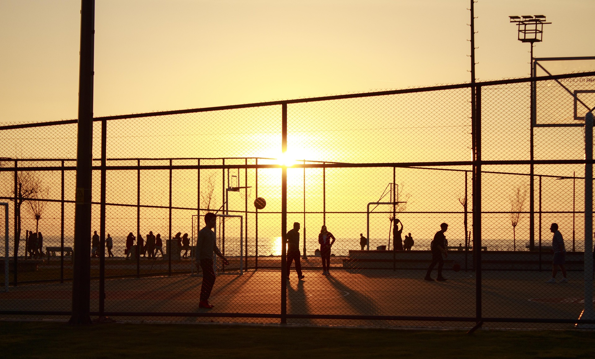

Basketball ist eine schnelle und sehr beliebte Teamsportart, die vor allem in Hallen gespielt wird. Das Ziel ist, den Ball in den Korb der gegnerischen Mannschaft zu werfen und dabei mehr Punkte zu erzielen. Besonders bekannt ist Basketball durch Profiligen und große Turniere.
Um Basketball zu spielen, braucht man verschiedene Fähigkeiten. Sehr wichtig sind die Grundtechniken wie Dribbeln, Passen und Werfen, da sie ständig im Spiel gebraucht werden. Außerdem sollte man eine gute Ausdauer und Schnelligkeit haben, weil das Spiel sehr schnell ist. Da Basketball ein Mannschaftssport ist, sind Teamfähigkeit und ein gutes Spielverständnis entscheidend. Auch Reaktionsfähigkeit und Koordination spielen eine große Rolle.
Beim Basketball spielen zwei Mannschaften mit jeweils 5 Spielern auf dem Feld. Ziel ist es, den Ball in den gegnerischen Korb zu werfen. Man darf den Ball nicht einfach tragen, sondern muss ihn dribbeln. Körperkontakt ist nur begrenzt erlaubt. Punkte gibt es je nach Wurfposition unterschiedlich viele. Das Team mit den meisten Punkten gewinnt.
